microgen.shape.strut_lattice subpackage
Abstract Lattice (microgen.shape.strut_lattice.abstract_lattice)
- class microgen.shape.strut_lattice.abstract_lattice.AbstractLattice(strut_radius: float | None = None, strut_heights: float | list[float] | None = None, base_vertices: npt.NDArray[np.float64] | None = None, strut_vertex_pairs: npt.NDArray[np.int64] | None = None, cell_size: float = 1.0, strut_joints: bool = False, density: float | None = None, **kwargs: Vector3DType | Rotation)
Bases:
ShapeAbstract Class to create strut-based lattice
- property base_vertices: ndarray[tuple[Any, ...], dtype[float64]]
coordinates of the vertices for a structure centered at the origin and enclosed in a size 1 cubic rve
- Type:
Property
- property cad_shape: cq.Shape
- generate(**_: KwargsGenerateType) cq.Shape
Generate the CAD shape.
- Returns:
cq.Shape
- generateVtk(size: float = 0.02, order: int = 1, periodic: bool = True, **kwargs: KwargsGenerateType) pv.PolyData
Deprecated. Use
generate_vtk()instead.
- generate_vtk(size: float = 0.02, order: int = 1, periodic: bool = True, **_: KwargsGenerateType) pv.PolyData
Generate a strut-based lattice VTK shape using the given parameters.
- property strut_heights: list[float]
Returns the list of strut lengths. If a single value is given, it is converted to a list.
- property strut_number: int
- property strut_vertex_pairs: ndarray[tuple[Any, ...], dtype[int64]]
pairs of vertex indices forming a strut
- Type:
Property
- property volume: float
- property vtk_shape: pv.PolyData
Generate a strut-based lattice VTK shape using the given parameters.
Body Centered Cubic (microgen.shape.strut_lattice.body_centered_cubic)
- class microgen.shape.strut_lattice.body_centered_cubic.BodyCenteredCubic(*args, **kwargs)
Bases:
AbstractLatticeClass to create a unit body-centered cubic lattice of given cell size and density or strut radius
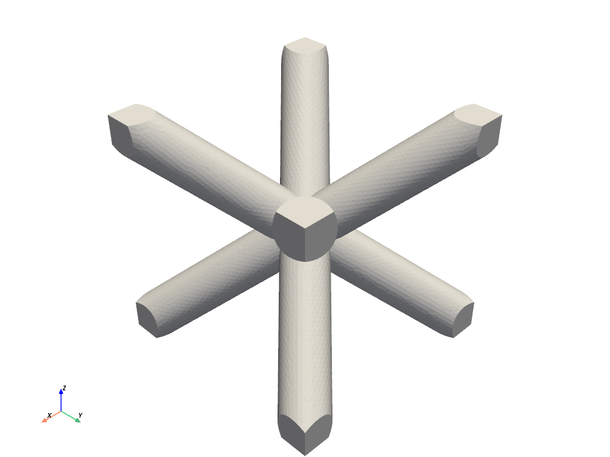
Cubic (microgen.shape.strut_lattice.cubic)
- class microgen.shape.strut_lattice.cubic.Cubic(*args, **kwargs)
Bases:
AbstractLatticeClass to create a unit cubic lattice of given cell size and density or strut radius.
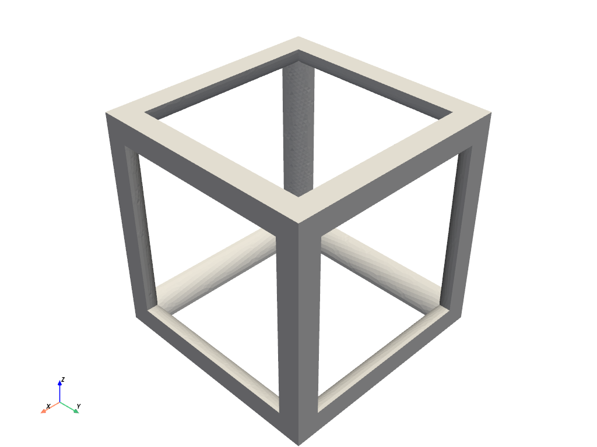
Cuboctahedron (microgen.shape.strut_lattice.cuboctahedron)
- class microgen.shape.strut_lattice.cuboctahedron.Cuboctahedron(*args, **kwargs)
Bases:
AbstractLatticeClass to create a unit cuboctahedron lattice of given cell size and density or strut radius
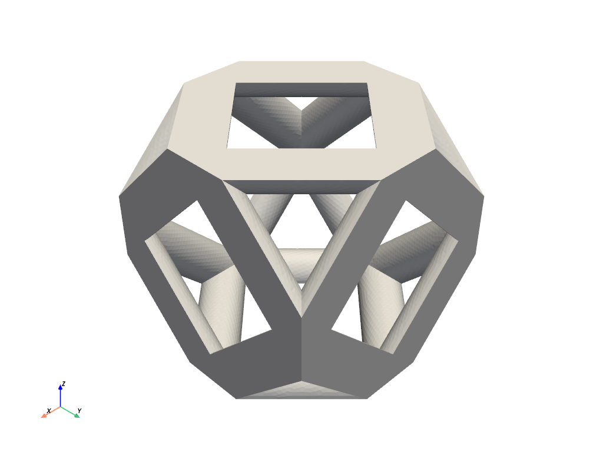
Custom Lattice (microgen.shape.strut_lattice.custom_lattice)
- class microgen.shape.strut_lattice.custom_lattice.CustomLattice(base_vertices: ndarray[tuple[Any, ...], dtype[float64]], strut_vertex_pairs: ndarray[tuple[Any, ...], dtype[int64]], *args, **kwargs)
Bases:
AbstractLatticeClass to create a custom lattice with user-defined base vertices and strut vertex pairs
Diamond (microgen.shape.strut_lattice.diamond)
- class microgen.shape.strut_lattice.diamond.Diamond(*args, **kwargs)
Bases:
AbstractLatticeClass to create a unit diamond lattice of given cell size and density or strut radius
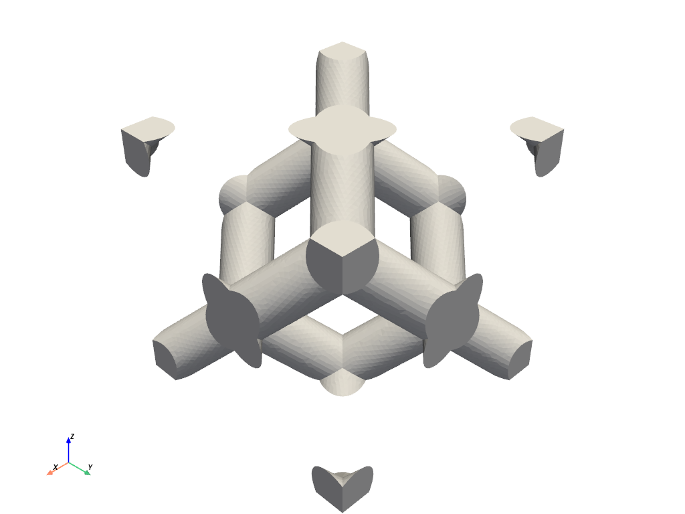
Face Centered Cubic (microgen.shape.strut_lattice.face_centered_cubic)
- class microgen.shape.strut_lattice.face_centered_cubic.FaceCenteredCubic(*args, **kwargs)
Bases:
AbstractLatticeClass to create a unit face-centered cubic lattice of given cell size and density or strut radius
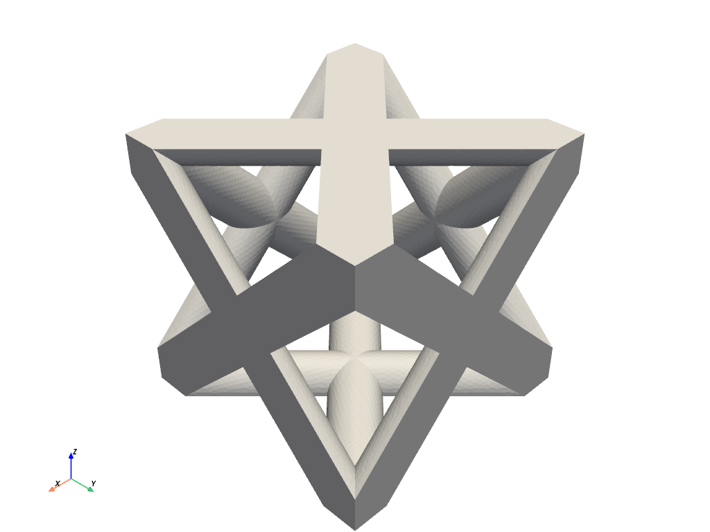
Octahedron (microgen.shape.strut_lattice.octahedron)
- class microgen.shape.strut_lattice.octahedron.Octahedron(*args, **kwargs)
Bases:
AbstractLatticeClass to create a unit octahedron lattice of given cell size and density or strut radius
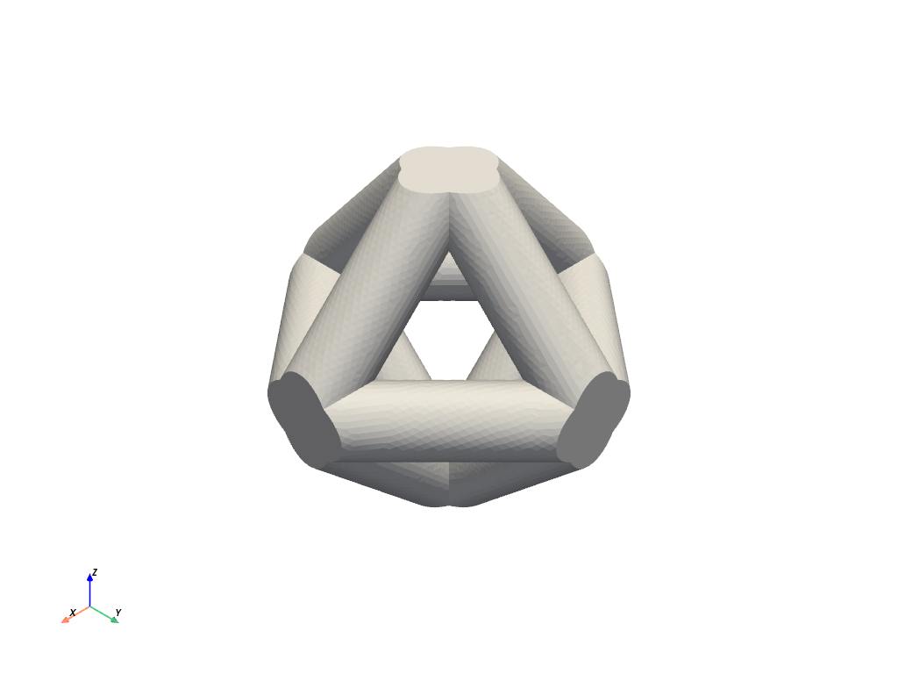
Octet-truss (microgen.shape.strut_lattice.octet_truss)
- class microgen.shape.strut_lattice.octet_truss.OctetTruss(*args, **kwargs)
Bases:
AbstractLatticeClass to create a unit octet-truss lattice of given cell size and density or strut radius
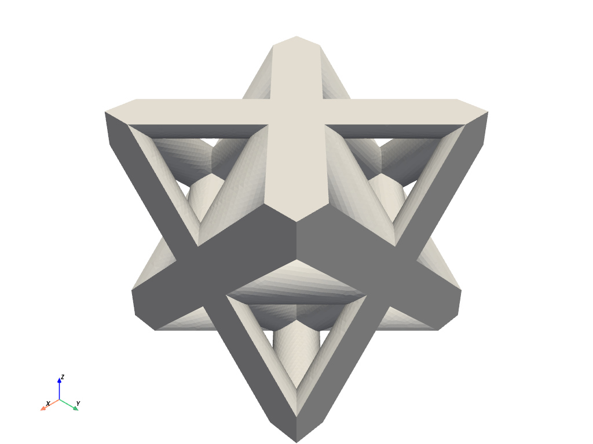
Rhombic Cuboctahedron (microgen.shape.strut_lattice.rhombic_cuboctahedron)
- class microgen.shape.strut_lattice.rhombic_cuboctahedron.RhombicCuboctahedron(*args, **kwargs)
Bases:
AbstractLatticeClass to create a unit rhombic cuboctahedron lattice of given cell size and density or strut radius

Rhombic Dodecahedron (microgen.shape.strut_lattice.rhombic_dodecahedron)
- class microgen.shape.strut_lattice.rhombic_dodecahedron.RhombicDodecahedron(*args, **kwargs)
Bases:
AbstractLatticeClass to create a unit rhombic dodecahedron lattice of given cell size and density or strut radius
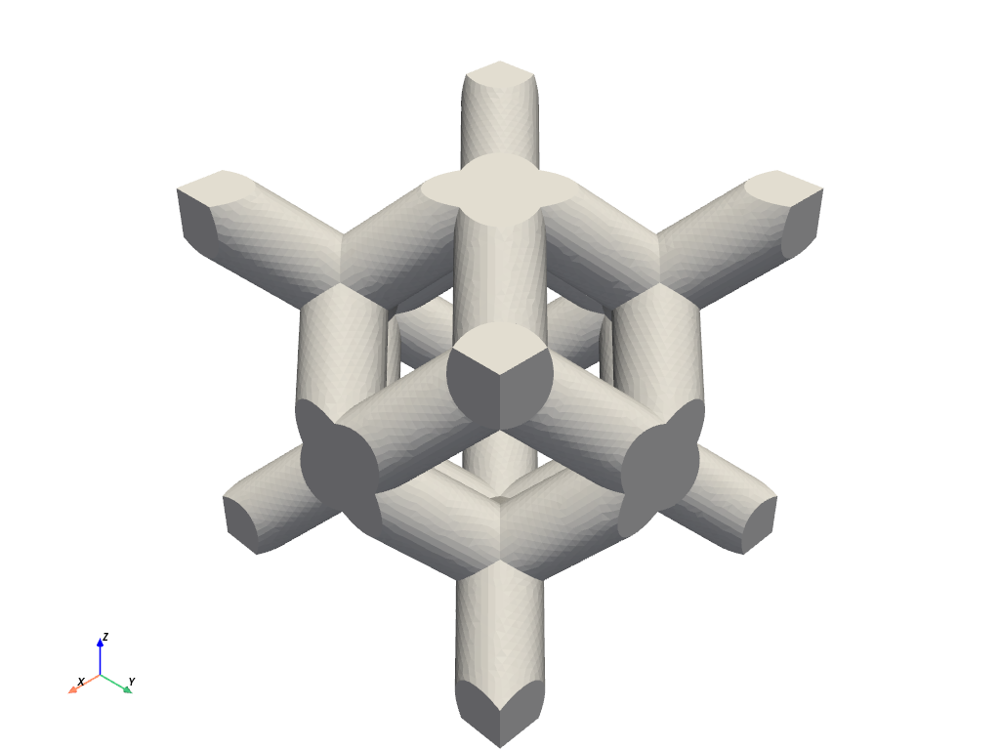
Truncated Cube (microgen.shape.strut_lattice.truncated_cube)
- class microgen.shape.strut_lattice.truncated_cube.TruncatedCube(*args, **kwargs)
Bases:
AbstractLatticeClass to create a unit truncated cubic lattice of given cell size and density or strut radius
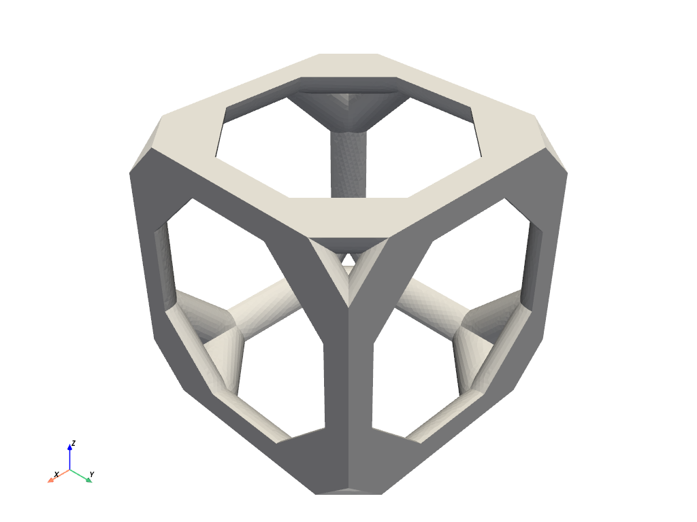
Truncated Cuboctahedron (microgen.shape.strut_lattice.truncated_cuboctahedron)
- class microgen.shape.strut_lattice.truncated_cuboctahedron.TruncatedCuboctahedron(*args, **kwargs)
Bases:
AbstractLatticeClass to create a unit truncated cuboctahedron lattice of given cell size and density or strut radius
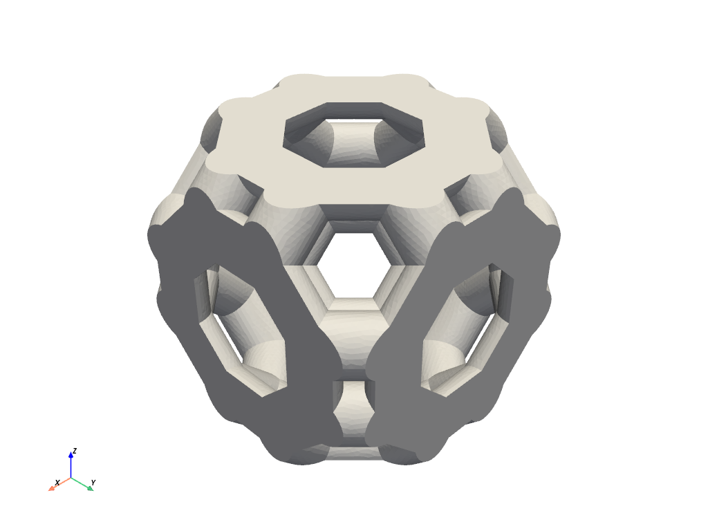
Truncated Octahedron (microgen.shape.strut_lattice.truncated_octahedron)
- class microgen.shape.strut_lattice.truncated_octahedron.TruncatedOctahedron(*args, **kwargs)
Bases:
AbstractLatticeClass to create a unit truncated octahedron lattice of given cell size and density or strut radius
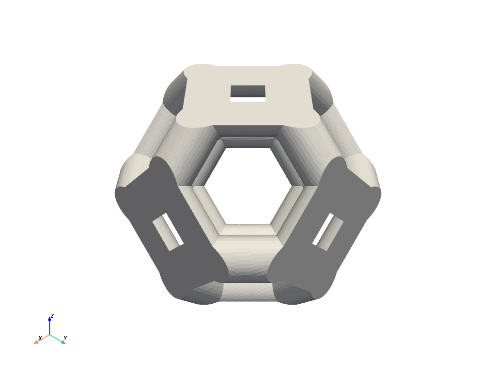